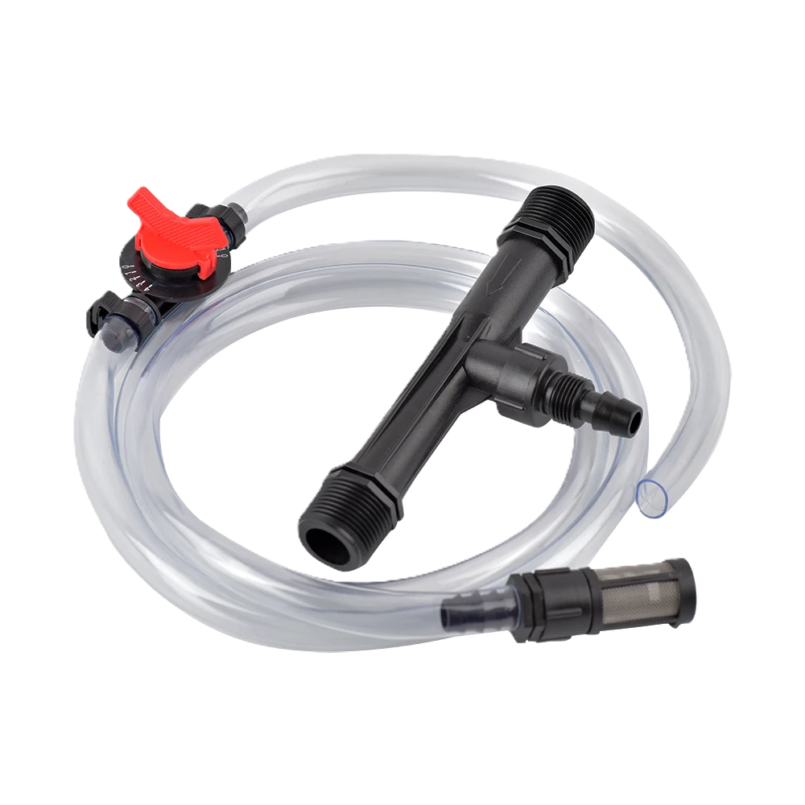
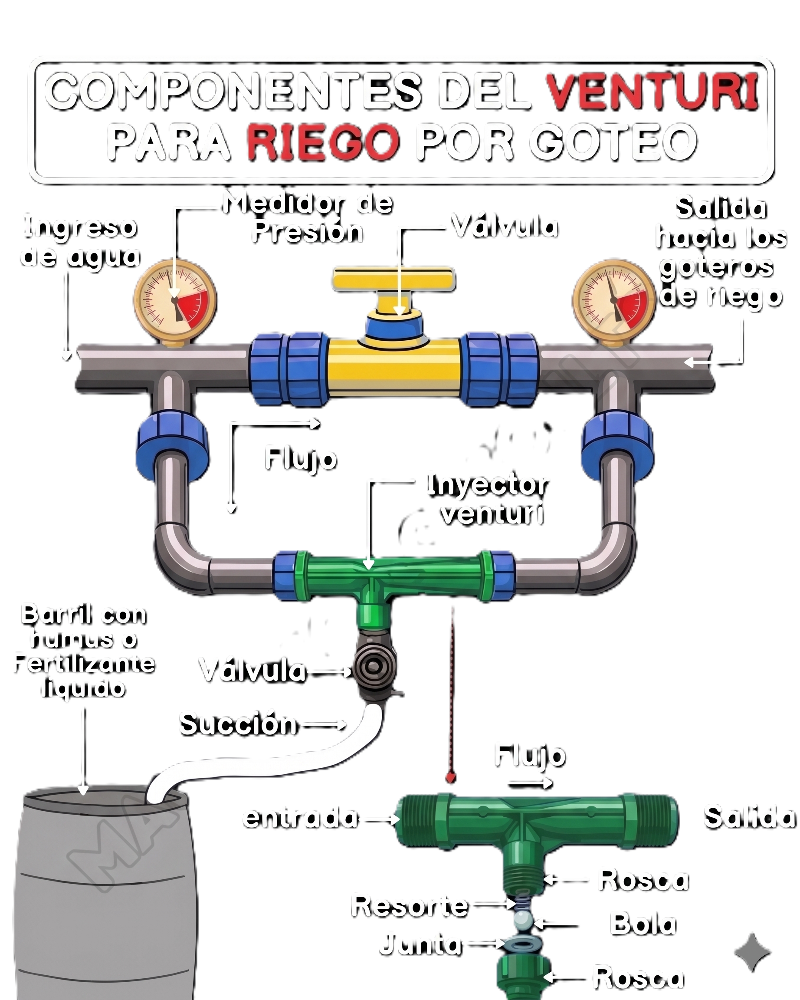

FERTIRRIGACIÓN

Sistema de aplicación de agua y fertilizantes mediante inyector Venturi — eficiente, económico y de alta uniformidad para cultivos tecnificados.
FERTIRRIGACIÓN?
La fertirrigación es la aplicación simultánea de agua y fertilizantes a través del sistema de riego. Generalmente opera en sistemas presurizados (goteo, micro), llevando los nutrientes directamente a la zona radical del cultivo.
Mejora significativamente la eficiencia tanto del riego como de la fertilización, reduciendo pérdidas y optimizando la absorción de nutrientes por las plantas.
El riego por goteo — superficial y subsuperficial — incrementa el rendimiento y la eficiencia del uso del agua respecto a métodos tradicionales, usando menor lámina y menor tiempo de riego.
Beneficio clave:
Nutriente → Raíz = Absorción máxima
Aplicación directa en zona radicular vs distribución superficialPROBLEMÁTICA
Sistemas no presurizados tienen menor eficiencia; el goteo optimiza el uso del recurso hídrico.
La uniformidad del fertilizante depende del inyector, disposición de laterales y presión operativa.
Bombas dosificadoras y sistemas complejos aumentan el costo inicial significativamente.
VENTURI
Los inyectores Venturi succionan fertilizante desde un tanque hacia la tubería de riego usando solo la diferencia de presión entre entrada y salida, sin requerir energía adicional.
P + ½ρv² + ρgh = constante (Bernoulli)
↑ velocidad → ↓ presión estática → succión de fertilizante desde tanque lateral — sin energía eléctrica adicionalDEL PROYECTO
Objetivo General
Diseñar, construir y evaluar un sistema de fertirrigación por goteo con inyector Venturi que aplique agua y fertilizante de forma eficiente y uniforme.
Hidráulica Venturi
Analizar el comportamiento hidráulico del Venturi (succión, pérdida de carga) bajo distintas condiciones de presión operativa.
Uniformidad
Evaluar la uniformidad de riego y fertirriego con diferentes configuraciones de emisores y disposición de laterales.
Análisis Económico
Comparar el desempeño técnico‑económico del Venturi frente a bombas centrífugas y proporcionales de inyección.
DEL SISTEMA
Cada componente cumple una función específica. El diseño integrado de todos ellos determina la eficiencia global del sistema.
Inyector Venturi
Cuerpo con sección convergente–garganta–divergente y toma de succión lateral. Núcleo del sistema.
Bomba de presión
Genera la presión necesaria para el riego y para activar la succión del Venturi sin energía adicional.
Tanque fertilizante
Contiene la solución nutritiva que será succionada hacia la línea principal por el efecto de vacío.
Goteros / Emisores
Cintas o goteros compensantes (2 L/h). Determinan la uniformidad final de distribución del fertirriego.
Red de tuberías
PVC o PE. Transportan el agua y la mezcla fertilizante desde el Venturi hasta cada emisor.
Válvulas y manómetros
Control de caudal, cierre y regulación de presión diferencial en entrada y salida del Venturi.
FUNCIONAMIENTO
PROYECTO
Diseño
Selección del tamaño de Venturi según presión, caudal y dosis de fertilizante. Definición de disposición de laterales usando modelos y nomogramas especializados.
Ensamble
Instalación del Venturi en línea o en bypass, antes del filtro, con manómetros en entrada y salida.
Pruebas
Medición de presiones, caudal motriz y caudal de succión con diferentes condiciones de operación.
Ajuste y evaluación
Ajuste de presión, válvulas y tiempo de inyección hasta alcanzar el rango óptimo de funcionamiento.

OTROS SISTEMAS
| Sistema | Energía extra | Costo inicial | Control de dosis | Mantenimiento |
|---|---|---|---|---|
| ✅ Inyector Venturi | No requiere | Bajo | Medio (p. diferencial) | Fácil |
| Bomba centrífuga | Sí, eléctrica | Alto | Alto | Medio |
| Bomba proporcional | Sí, hidráulica | Medio–alto | Alto, constante | Especializado |
LIMITACIONES
✓ Ventajas
Bajo costo
Menor inversión inicial frente a bombas centrífugas y otros inyectores. Económicamente viable por muchos años de operación.
Sin energía adicional
Opera con la presión del propio sistema de riego. No requiere conexión eléctrica extra ni componentes electrónicos.
Fácil mantenimiento
Operación simple. Compatible con sistemas de goteo de baja presión y con diseños de campo e invernadero.
Alta uniformidad
Con diseño adecuado, emisores compensantes y disposición transversal de laterales se logran uniformidades altas.
✗ Limitaciones
Dependencia de presión
Cambios en la presión operativa reducen la tasa de succión y pueden afectar la uniformidad de aplicación del fertilizante.
Pérdidas de carga
El Venturi introduce pérdida de presión que debe considerarse en el diseño hidráulico de toda la red de distribución.
Riesgo de obstrucciones
Sin buen filtrado y sin fertilizantes de alta solubilidad puede producirse taponamiento de goteros. Requiere mantenimiento preventivo.
ESPERADOS
Succión óptima
El Venturi alcanza caudales de succión adecuados, incrementando con la presión hasta alcanzar un punto de operación óptimo.
Flujo estable
A caudales motrices superiores al mínimo (>14.6 L/min en algunos equipos), el funcionamiento es estable y predecible.
Mezcla homogénea
Venturi + emisores adecuados logran baja variación en la dosis de fertilizante (bajo coeficiente de variación).
Mayor rendimiento
El riego por goteo en maíz y hortalizas muestra mejores rendimientos y relación beneficio/costo frente a sistemas sin presurización.
Los estudios demuestran que un buen diseño geométrico del Venturi, un control adecuado de la presión del sistema y la correcta selección de emisores y disposición de laterales permiten lograr uniformidades altas de riego y fertirriego, con mejoras claras en rendimiento y eficiencia del uso del agua.
↑ Volver al inicioEL SISTEMA